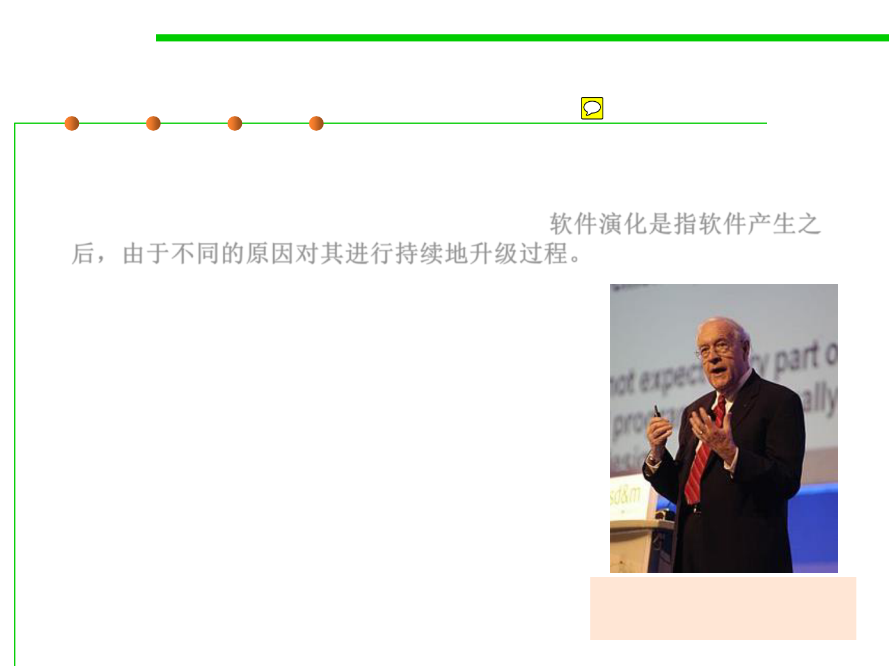

Software Evolution
1.1 Multi-Dimensional Views of Software Construction
▪ Software evolution is a term used in software maintenance,
referring to the process of developing software initially, then
repeatedly updating it for various reasons.软件演化是指软件产生之
后，由于不同的原因对其进行持续地升级过程。
– Over 90% of the costs of a typical system arise
in the maintenance phase, and that any successful
piece of software will inevitably be maintained.
Frederick Brooks (1931-)
Turing Award 1999